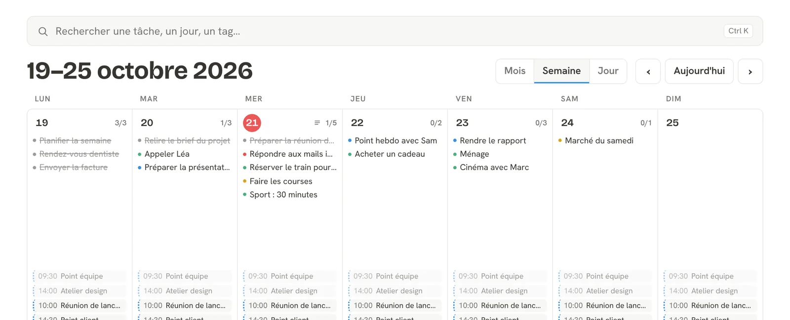
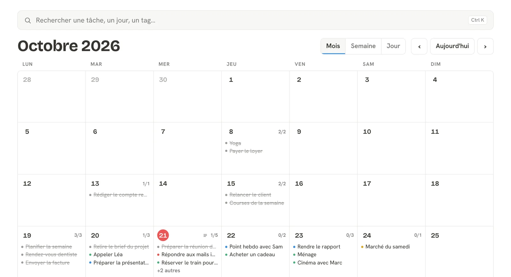
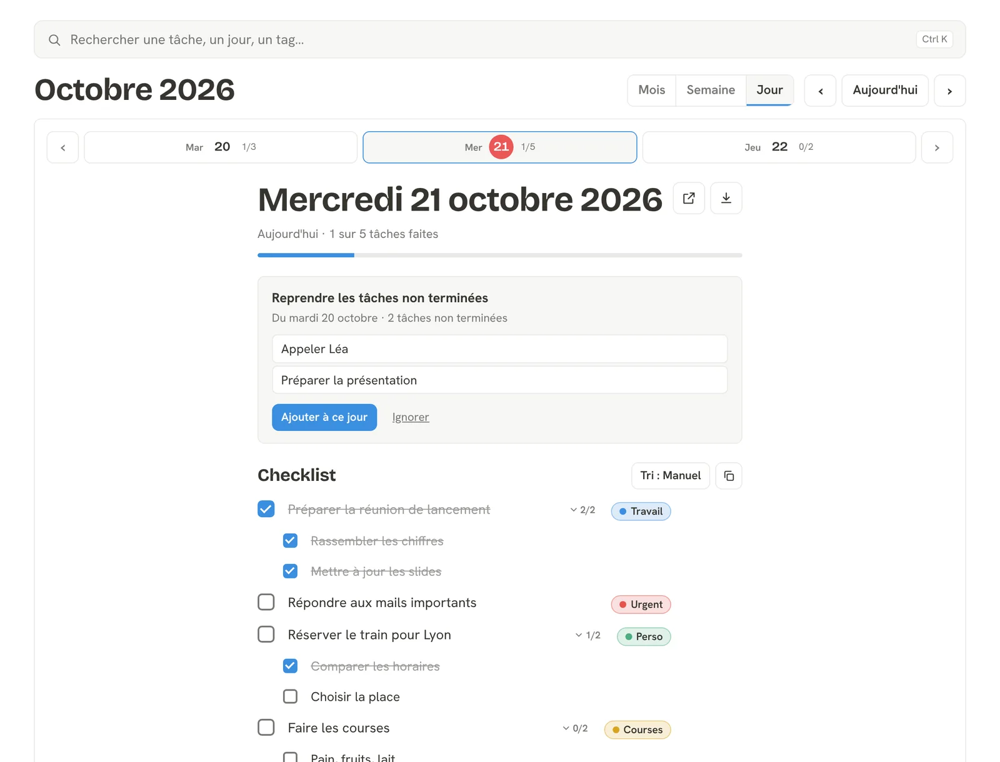
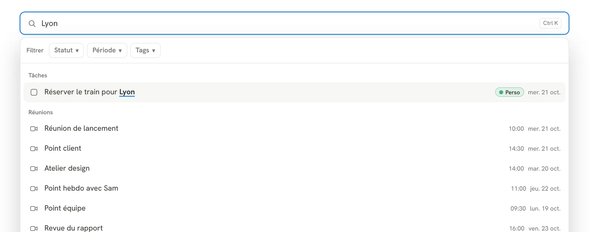
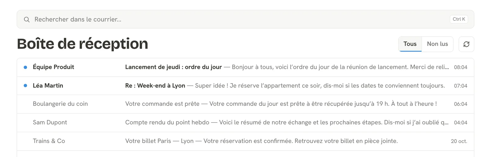

Ta journée, tes tâches et ton courrier au même endroit.
Un calendrier simple, une checklist par jour, tes réunions Google et tes mails Gmail. Sur téléphone comme sur ordinateur.
Sans compte, tout reste sur ton appareil.

Ta semaine, d'un seul regard
Passe du mois à la semaine puis au jour en un clic. Tes tâches et tes réunions Google sont réunies dans la même grille.
- Vues mois, semaine et jour
- Tes réunions Google Agenda à côté de tes tâches
- Le jour d'aujourd'hui toujours repéré

Une checklist qui avance avec toi
Découpe en sous-tâches, classe avec des étiquettes colorées, ajoute une note. Les tâches non terminées de la veille se reprennent en un clic.

Retrouve tout en quelques lettres
Une seule barre pour chercher dans tes tâches, tes jours, tes étiquettes et tes réunions. Filtre par statut, période ou étiquette.
- Raccourci Ctrl + K
- Résultats en direct, même avec une partie du mot

Ta boîte Gmail, sans quitter ta page
Lis tes mails récents, filtre les non lus et ouvre un message pour le lire en entier. Lecture seule : rien n'est envoyé, modifié ni supprimé.

Tes données t'appartiennent
Export PDF ou JSON
Garde une copie de tes journées sur la période de ton choix.
Import de sauvegarde
Réimporte un fichier JSON : fusionne ou remplace tes données.
Effacement en un clic
Supprime toutes tes données, en ligne et sur l'appareil, quand tu veux.
Ta vie privée passe avant tout
Chacun chez soi
Tu es la seule personne à voir tes tâches et tes notes.
Lecture seule
L'application ne peut rien modifier dans ton compte Google.
Sans compte possible
Tout reste sur ton appareil tant que tu ne te connectes pas.
Code ouvert
Le code est public : tu peux vérifier ce qu'il fait.
Questions fréquentes
Dois-je créer un compte ?
Non. Tu peux utiliser l'application sans compte : tout reste alors sur ton appareil.
Mes données sont-elles perdues si je change d'appareil ?
Pas si tu es connecté avec Google. Sans connexion, pense à faire une sauvegarde JSON depuis les réglages.
Pourquoi la connexion Google est-elle limitée ?
L'accès à Gmail et à Google Agenda est réservé pour le moment à des comptes invités. Demande à l'auteur de t'ajouter.
L'application peut-elle envoyer ou supprimer mes mails ?
Non. Elle lit uniquement ton courrier et ton agenda, elle ne peut rien envoyer, modifier ni supprimer.
Comment effacer mes données ?
Réglages, puis « Réinitialiser toutes les données ». Cette action est définitive.
Prends le contrôle de ta journée
Ouvre l'application et crée ta première tâche en quelques secondes.